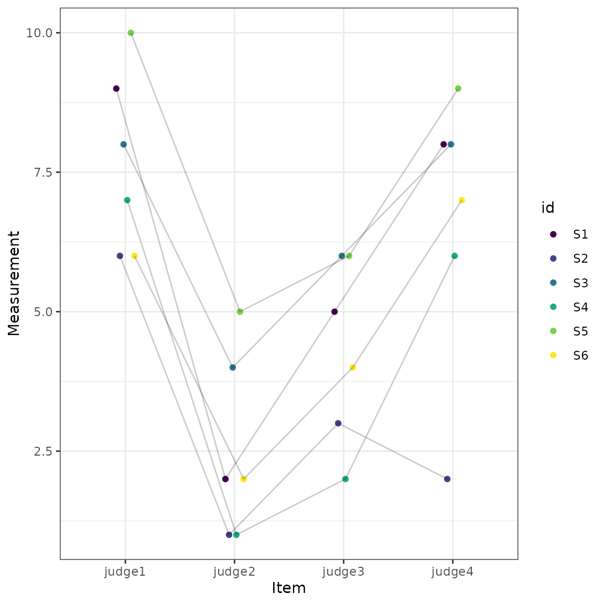

Reliability Analysis
Aaron R. Caldwell
Last Updated: 2026-01-20
Source:vignettes/reliability_analysis.Rmd
reliability_analysis.RmdBackground
Another feature of this R package is the ability to estimate the reliability of a measurement. This R package allows for the calculation of Intraclass Correlation Coefficients (ICC), various standard errors (SEM, SEE, and SEP), and coefficient of variation. All of the underlying calculations (sans the coefficient of variation) are based on the paper by Weir (2005)1. This is a fairly popular paper within my own field (kinesiology), and hence was the inspiration for creating this function that provides all the calculative approaches included within that manuscript.
Code Demonstration
For this package, the test-retest reliability statistics can be
calculated with the reli_stats function. This function
allow for data to be input in a long (multiple rows of data for each
subject) or in wide (one row for each subject but a column for each
item/measure).
For the long data form, the column containing the subject identifier
(id), item number (item), and measurements
(measure) are provided. In this function I refer to items
similar to if we were measuring internal consistency for a questionnaire
(which is just a special case of test-retest reliability). So,
item could also be refer to time points, which is what is
typically seen in human performance settings where test-retest
reliability may be evaluated over the course of repeated visits to the
same laboratory. If wide is set to TRUE then
the columns containing the measurements are provided (e.g.,
c("value1","value2","value3")).
To demonstrate the function, I will create a data set in the wide format.
# Example from Shrout and Fleiss (1979), pg. 423
dat = data.frame(judge1 =
c(9,6,8,7,10,6),
judge2 =
c(2,1,4,1,5,2),
judge3 =
c(5,3,6,2,6,4),
judge4 =
c(8,2,8,6,9,7))Now, that we have a data set (dat), I can use it in the
reli_stats function.
test1 = reli_stats(
data = dat,
wide = TRUE,
col.names = c("judge1", "judge2", "judge3", "judge4")
)This function also has generic print and plot functions. The output
from print provides the coefficient of variation, standard errors, and a
table of various intraclass correlation coefficients. Notice the
conclusions about the reliability of the measurement here would vary
greatly based on the statistic being reported. What statistic you should
report is beyond the current vignette, but is heavily detailed in Weir (2005).
However, within the table there are columns for model and
measures which describe the model that is being used and
the what these different ICCs are intended to measure, respectively.
print(test1)
#>
#> Coefficient of Variation (%): 19.1
#> Standard Error of Measurement (SEM): 1.01
#> Standard Error of the Estimate (SEE): 1.22
#> Standard Error of Prediction (SEP): 1.9
#>
#> Intraclass Correlation Coefficients with 95 % C.I.
#> Model Measures Type ICC Lower CI Upper CI
#> 1 one-way random Agreement ICC1 0.1657 -0.09672 0.6434
#> 2 two-way random Agreement ICC2 0.2898 0.04290 0.6911
#> 3 two-way fixed Consistency ICC3 0.7148 0.41184 0.9258
#> 4 one-way random Avg. Agreement ICC1k 0.4428 -0.54504 0.8783
#> 5 two-way random Avg. Agreement ICC2k 0.6201 0.15204 0.8995
#> 6 two-way fixed Avg. Consistency ICC3k 0.9093 0.73690 0.9804Also included in the results is a plot of the measurements across the items (e.g., time points).
plot(test1)
Convergence Issues
In some cases there are convergence issues for the linear mixed
models. For this reason, I have added a function, reli_aov,
which uses a sums of squares approach (i.e., analysis of variance)
rather than a linear mixed model. As you can see below the results will
often match that of reli_stats. The only time this function
is necessary to use is when there are convergence issues. Rows with
missing data are dropped when using reli_aov.
test2 = reli_aov(
data = dat,
wide = TRUE,
col.names = c("judge1", "judge2", "judge3", "judge4")
)
test2
#>
#> Coefficient of Variation (%): 19.1
#> Standard Error of Measurement (SEM): 1.01
#> Standard Error of the Estimate (SEE): 1.22
#> Standard Error of Prediction (SEP): 1.9
#>
#> Intraclass Correlation Coefficients with 95 % C.I.
#> Model Measures Type ICC Lower CI Upper CI
#> 1 one-way random Agreement ICC1 0.1657 -0.09672 0.6434
#> 2 two-way random Agreement ICC2 0.2898 0.04290 0.6911
#> 3 two-way fixed Consistency ICC3 0.7148 0.41183 0.9258
#> 4 one-way random Avg. Agreement ICC1k 0.4428 -0.54504 0.8783
#> 5 two-way random Avg. Agreement ICC2k 0.6201 0.15204 0.8995
#> 6 two-way fixed Avg. Consistency ICC3k 0.9093 0.73690 0.9804Calculative Approach
Model
The linear mixed model used for the calculations is specified as the following:
\[ Y_{i} \sim\ N \left(\alpha_{j[i],k[i]}, \sigma^2 \right) \]
\[ \alpha_{j} \sim\ N \left(\mu_{\alpha_{j}}, \sigma^2_{\alpha_{j}} \right) \text{, for id j = 1,} \dots \text{,J} \]
\[ \alpha_{k} \sim\ N \left(\mu_{\alpha_{k}}, \sigma^2_{\alpha_{k}} \right) \text{, for items k = 1,} \dots \text{,K} \]
Components of Variance
Mean Squared Error (MSE)
\[ MSE = \sigma^2 \]
Variance Between Subjects
\[ MSB = n_k \cdot \sigma^2_{\alpha j} + \sigma^2 \]
Variance Between Items/Judges
\[ MSJ = n_{j} \cdot \sigma^2_{\alpha_{k}} + \sigma^2 \]
Variance Within Subjects/Participants
\[ MSW = \sigma^2 + \sigma^2_{\alpha_{k}} \]
Intraclass Correlation Coefficients
\[ ICC_{(1,1)} = \frac{MSB - MSW}{MSB + (n_j-1) \cdot MSW} \] \[ ICC_{(2,1)} = \frac{MSB - MSE}{MSB+(n_j -1) \cdot MSE + n_j \cdot (MSJ - MSE) \cdot n^{-1}} \] \[ ICC(_{3,1)} = \frac{MSB - MSE}{MSB + (n_j -1) \cdot MSE} \] \[ ICC_{(1,k)} = \frac{MSB - MSW}{MSB} \] \[ ICC_{(2,k)} = \frac{MSB - MSW}{MSB + (MSJ - MSE) \cdot n_j^{-1}} \] \[ ICC_{(3,k)} = \frac{MSB - MSE}{MSB} \]
ICC Confidence Intervals
ICC(1,1)
\[ F = \frac{MSB}{MSW} \]
\[ df_{n} = n_j - 1 \]
\[ df_{d} = n_j \cdot (n_k - 1) \]
\[ F_{L} = \frac{F}{F_{(1 - \alpha, \space df_{n}, \space df_{d})}} \]
\[ F_{U} = F \cdot F_{(1 - \alpha, \space df_{d}, \space df_{n})} \]
\[ Lower \space CI = \frac{(F_L - 1)}{(F_L + (n_j - 1))} \]
\[ Upper \space CI = \frac{(F_U - 1)}{(F_U + n_j - 1)} \]
ICC(2,1)
\[ F = \frac{MSJ}{MSE} \]
\[ vn = (n_k - 1) \cdot (n_j - 1) \cdot [(nj \cdot ICC_{(2,1)} \cdot F + n_j \cdot (1 + (n_k - 1) \cdot ICC_{(2,1)}) - n_k \cdot ICC_{(2,1)})]^2 \]
\[ vd = (n_j - 1) \cdot n_k^2 \cdot ICC_{(2,1)}^2 \cdot F^2 + (n_j \cdot (1 + (n_k - 1) \cdot ICC_{(2,1)}) - n_k \cdot ICC_{(2,1)})^2 \] \[ v = \frac{vn}{vd} \]
\[ F_{L} = F_{(1 - \alpha, \space n_j-1, \space v)} \]
\[ F_{U} = F_{(1 - \alpha, \space v, \space n_j - 1)} \]
\[ Lower \space CI = \frac{n_j \cdot (MSB - F_U \cdot MSE)}{(F_U \cdot (n_k \cdot MSJ + (n_k \cdot n_j - n_k - n_j) \cdot MSE) + n_j \cdot MSB)} \]
\[ Upper \space CI = \frac{n_j \cdot (MSB \cdot F_L - MSE)}{(n_k \cdot MSJ + (n_k \cdot n_j - n_k - n_j) \cdot MSE + n_j \cdot F_L \cdot MSB)} \]
ICC(3,1)
\[ F = \frac{MSJ}{MSE} \] \[ df_{n} = n_j - 1 \] \[ df_{d} = (n_j-1) \cdot (n_k - 1) \]
\[ F_{L} = \frac{F}{F_{(1 - \alpha, \space df_{n}, \space df_{d})}} \] \[ F_{U} = F \cdot F_{(1 - \alpha, \space df_{n}, \space df_{d})} \] \[ F3L <- F31/qf(1 - alpha, df21n, df21d) \] \[ F3U <- F31 * qf(1 - alpha, df21d, df21n) \] \[ Lower \space CI = (F3L - 1)/(F3L + n_k - 1) \]
\[ Upper \space CI = (F3U - 1)/(F3U + n_k - 1) \]
ICC(1,k)
\[ F = \frac{MSB - MSW}{MSB} \] \[ df_{n} = n_j - 1 \]
\[ df_{d} = n_j \cdot (n_k - 1) \]
\[ F_{L} = \frac{F}{F_{(1 - \alpha, \space df_{n}, \space df_{d})}} \] \[ F_{U} = F \cdot F_{(1 - \alpha, \space df_{d}, \space df_{n})} \]
\[ Lower \space CI = 1-\frac{1}{F_L} \] \[ Upper \space CI = 1-\frac{1}{F_U} \]
ICC(2,k)
\[ F = \frac{MSB - MSW}{MSB} \]
\[ vn = (n_k - 1) \cdot (n_j - 1) \cdot [(nj \cdot ICC_{(2,k)} \cdot F + n_j \cdot (1 + (n_k - 1) \cdot ICC_{(2,k)}) - n_k \cdot ICC_{(2,k)})]^2 \]
\[ vd = (n_j - 1) \cdot n_k^2 \cdot ICC_{(2,k)}^2 \cdot F^2 + (n_j \cdot (1 + (n_k - 1) \cdot ICC_{(2,k)}) - n_k \cdot ICC_{(2,k)})^2 \]
\[ v = \frac{vn}{vd} \]
\[ F_{L} = F_{(1 - \alpha, \space n_j-1, \space v)} \] \[ F_{U} = F_{(1 - \alpha, \space v, \space n_j - 1)} \]
\[ L3 = \frac{n_j \cdot (MSB - F_U \cdot MSE)}{(F_U \cdot (n_k \cdot MSJ + (n_k \cdot n_j - n_k - n_j) \cdot MSE) + n_j \cdot MSB)} \]
\[ U3 = \frac{n_j \cdot (MSB \cdot F_L - MSE)}{(n_k \cdot MSJ + (n_k \cdot n_j - n_k - n_j) \cdot MSE + n_j \cdot F_L \cdot MSB)} \]
\[ Lower \space CI = \frac{L3 \cdot n_k}{(1 + L3 \cdot (n_k - 1))} \]
\[ Upper \space CI = \frac{U3 \cdot n_k}{(1 + U3 \cdot (n_k - 1))} \]
ICC(3,k)
\[ F = \frac{MSB}{MSE} \]
\[ df_n = n_j - 1 \]
\[ df_d = (n_j - 1) \cdot (n_k - 1) \]
\[ F_L = \frac{F}{F_{(1 - \alpha, \space df_n, \space df_d})} \]
\[ F_U = F \cdot F_{(1 - \alpha, \space df_d, \space df_n)} \]
\[ Lower \space CI = 1-\frac{1}{F_L} \]
\[ Upper \space CI = 1-\frac{1}{F_U} \]
Standard Error Calculations
The standard error of the measurement (SEM), standard error of the estimate (SEE), and standard error of prediction (SEP) are all estimated with the following calculations.2
The default SEM calculation is the following:
\[
SEM = \sqrt{MSE}
\] Alternatively, the SEM can be calculated as the following and
the ICC is determined through the se_type argument:
\[
SEM = \sqrt{\frac{SS_{total}}{(N-1)}} \cdot \sqrt{1-ICC}
\] The other measures default to using the following equations.
The default is to use \(ICC_{3,1}\),
but can be modified with the se_type argument.
\[ SEE = \sqrt{\frac{SS_{total}}{(N-1)}} \cdot \sqrt{ICC \cdot (1-ICC)} \]
\[ SEP = \sqrt{\frac{SS_{total}}{(N-1)}} \cdot \sqrt{1-ICC^2} \]
Coefficient of Variation
The CV is calculated 3 potential ways within reli_stats.
I highly recommend reporting the default version of CV.
- From the MSE (default)
\[ CV = \frac{ \sqrt{MSE} }{ \bar y} \]
- From the SEM3
\[ CV = \frac{SEM}{ \bar y} \]
- From the model residuals (most liberal)
\[ CV = \frac{\sqrt{\frac{\Sigma^{N}_{i=1}(y_i - \hat y_i)^2}{N_{obs}}}}{ \bar y} \]
Other Confidence Intervals
If the other_ci argument is set to TRUE then confidence
intervals will be calculated for the CV, SEM, SEP, and SEE.
Chi-square
The default method is type = 'chisq. This method
utilizes the chi-square distribution to approximate confidence
intervals for these measurements. The accuracy of these estimates is
likely variable, and is probably poor for small samples.
For the CV, the calculation is as follows:
\[ Lower \space CI = \frac{CV}{\sqrt{(\frac{\chi^2_{1-\alpha/2}}{df_{error}+1}-1) \cdot CV^2 \cdot \frac{\chi^2_{1-\alpha/2}}{df_{error}}}} \]
\[ Upper \space CI = \frac{CV}{\sqrt{(\frac{\chi^2_{\alpha/2}}{df_{error}+1}-1) \cdot CV^2 \cdot \frac{\chi^2_{\alpha/2}}{df_{error}}}} \] For the variance based measures (s) the calculation is as follows:
\[ Lower \space CI = s \cdot \sqrt{\frac{df_{error}}{\chi^2_{1-\alpha/2}}} \]
\[ Upper \space CI = s \cdot \sqrt{\frac{df_{error}}{\chi^2_{\alpha/2}}} \]
Bootstrap
If type is not set to chisq then bootstrapping is
performed.
-
reli_aovutilizes a non-parametric ordinary bootstrap. -
reli_statsutilizes a parametric bootstrap.
The number of resamples can be set with the replicates argument
(default is 1999; increase for greater accuracy or lower for greater
speed). The reported confidence intervals are estimated using the
percentile method type = 'perc', the normal
type = 'norm', or basic methods
type = 'basic'.
To ensure reproducibility, please use set.seed() when
these confidence intervals are calculated.
Inter-Rater Reliability
In some cases, the reliability of a categorical or ordinal scale may
be worth investigating. For example, physicians may want to develop a
diagnosis tool and ensure that the diagnosis is reliable (i.e.,
categorical designation) or severity of the disease (i.e., a Likert-type
scale). Coefficients can be calculated to assess the degree of
inter-rater reliability. In its simplest form, the percent agreement
between all the raters can be calculated. All other coefficients of
agreement are essentially trying to “correct” for random guessing of the
rater. The function to make these calculations in the
SimplyAgree is agree_coef, and it produces 4
estimates: percent agreement, Gwet’s AC, Fleiss’ Kappa, and
Krippendorff’s Alpha. However, other packages provide much a much
greater breadth of calculative approaches (Gwet 2019).
In the agree_coef function, the user can specify
weighted = TRUE. If this argument is set to true than the
ratings have quadratic weights applied to them. Essentially, this
penalizes values farther away from each other more than those close to
each other. For example, a pair of values equal to 3 and 4 would be
penalized less than a pair of values to 1 and 4. For more details, on
these “agreement coefficients” I refer all users to Gwet’s textbook on
inter-rater agreement (Gwet
2014).
As a demonstration, we can create a matrix of ratings.
ratermat1 = ("Rater1 Rater2 Rater3 Rater4
1 1 1 NA 1
2 2 2 3 2
3 3 3 3 3
4 3 3 3 3
5 2 2 2 2
6 1 2 3 4
7 4 4 4 4
8 1 1 2 1
9 2 2 2 2
10 NA 5 5 5
11 NA NA 1 1
12 NA NA 3 NA")
ratermat2 = as.matrix(read.table(textConnection(ratermat1),
header=TRUE,
row.names=1))We can then perform the analysis without the weights.
agree_coef(data = ratermat2,
wide = TRUE,
weighted = FALSE,
col.names = c("Rater1", "Rater2", "Rater3", "Rater4"))
#> est se lower.ci upper.ci
#> Percent Agreement 0.8181818 0.1256090 0.5417184 1
#> Gwet's AC1 0.7754441 0.1429500 0.4608133 1
#> Fleiss' Kappa 0.7611693 0.1530192 0.4243763 1
#> Kririppendorff's Alpha 0.7434211 0.1454787 0.4192743 1Or, perform it with weighting.
agree_coef(data = ratermat2,
wide = TRUE,
weighted = TRUE,
col.names = c("Rater1", "Rater2", "Rater3", "Rater4"))
#> est se lower.ci upper.ci
#> Percent Agreement 0.9753788 0.09061628 0.7759337 1
#> Gwet's AC2 0.9140007 0.10396224 0.6851814 1
#> Fleiss' Kappa 0.8649351 0.14603361 0.5435173 1
#> Kririppendorff's Alpha 0.8491071 0.12905120 0.5615632 1